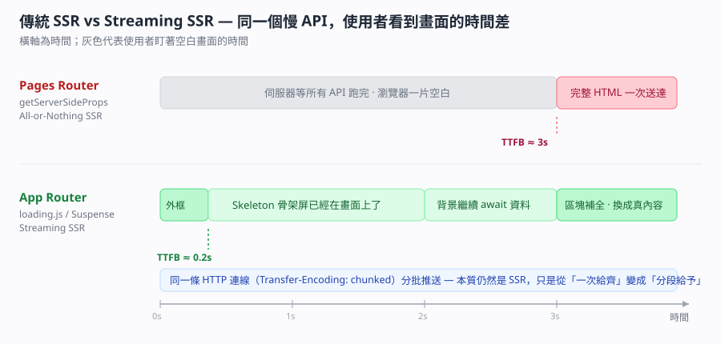

[!info]- 🔗 與既有筆記的關聯
(1) [[SSR-renderToString與Hydration-伺服器端渲染流程]] 講的是「一次性把整棵樹轉成 HTML 字串再 hydrate」，那正好就是本篇說的 Pages Router 式 SSR。本篇是它的下一集：Streaming SSR 怎麼把那個「一次性」拆成「分批」。
(2) [[react-server-component-slug-動態路由參數]] 已經記過 RSC 在動態路由上的寫法，本篇補的是 RSC 在「路由架構層」為什麼會長成資料夾樹、以及它跟 layout 狀態保留的因果關係。
(3) [[FCP首次內容繪製-SEO爬蟲與打包五步驟]] 講 FCP 與爬蟲，本篇第五節的 SEO 段落是那篇在框架選型上的延伸：Streaming 改善的是 TTFB 與 FCP，不是 SEO 本身。
(4) [[動態路由與應用進入點-Nextjs的slug-VueRouter冒號-Express的appget]] 記的是三個框架的路由語法對照，本篇補 Next.js 兩套路由「架構層級」的差異。本篇重點 a–v，共 22 個。

(a)Pages Router 是「檔名即路由」，pages/about.js 自動對應 /about。App Router 是「資料夾即路由」，資料夾名稱是路徑，頁面本身一定要叫 page.js / page.tsx，不能沿用舊習慣隨便命名。
(b)元件預設身分不同：App Router 的元件預設是 React Server Component（RSC，伺服器元件），要用 Hook 或事件處理才加 'use client'；Pages Router 所有元件預設都是 Client Component（客戶端元件）。
(c)資料取得的入口不同。
| 項目 | Pages Router | App Router |
|---|---|---|
| 取資料方式 | getServerSideProps / getStaticProps / getInitialProps |
在 Async Server Component 裡直接 await fetch() 或直接打 DB |
| 這段程式在哪執行 | 伺服器（頁面級別） | 伺服器（元件級別） |
| 需不需要學框架專屬 API | 要 | 不用，寫 Web 標準的 fetch |
| 共用佈局 | _app.js 或社群的 getLayout 變通寫法 |
原生 layout.js，可多層巢狀 |
| 載入中的 UI | 自己寫 loading state | 放一個 loading.js 就好 |
| 錯誤邊界 | 自己接 Error Boundary | 放一個 error.js 就好 |
(d)layout.js 可以有很多個而且應該有很多個。app/layout.js 是根佈局（Root Layout），裡面必須包含 <html> 與 <body>；app/(rsc)/rsc/layout.js 是巢狀佈局（Nested Layout），只作用在那個子樹。造訪 /rsc 時渲染結構會自動疊成 Root Layout ➔ Sub Layout ➔ Page。
(e)括號資料夾 (rsc) 叫路由分組（Route Group），名稱不會出現在 URL，所以造訪 /rsc 不會變成 /rsc/rsc。它純粹是拿來「分組套用不同 layout」用的。
(f)Pages Router 的底層是「整棵樹轉字串 + 一包 JSON」。伺服器跑完 getServerSideProps，把整頁 React 樹渲染成完整 HTML 字串，再附一份 __NEXT_DATA__（頁面初始狀態的 JSON）。瀏覽器收到後做水合（Hydration）。
(g)App Router 的底層是 RSC Payload（又稱 React Flight 流）——Server Component 在伺服器上執行後，不送 JavaScript 程式碼到瀏覽器，而是把元件樹轉成一種類 JSON 的串流格式送過去。
(h)水合成本因此變成「細粒度」的：只有標了 'use client' 的元件才會產生前端 bundle 並被 hydrate，Server Component 在前端只負責畫 DOM，不佔水合時間也不佔前端記憶體。
(i)「切頁面時 layout 狀態會不會被清掉」的答案就藏在路由樹裡。App Router 因為路由是資料夾樹，Router 知道 layout 沒變、只有 page 變，所以只傳變動的 page 子樹 RSC Payload，layout 裡的輸入框內容、捲動位置、側邊欄展開狀態都留著。
(j)Pages Router 切頁面預設是整個視圖區清空重繪：舊頁面元件整個 Unmount、新頁面整個 Mount，連 Header 與 Sidebar 都會被銷毀重建。要避免只能在 _app.js 手寫 Page.getLayout = ...，那是社群變通方案（Workaround），不是框架原生機制。所以「Pages Router 不支援 layout」＝「缺乏原生（first-class）的巢狀 layout 支援」，兩句話語意上是相等的。
(k)這是 Abby 當下最直覺的疑問：都出新的 Router 了怎麼還用舊的 fetch？關鍵是那個 fetch 已經被 Next.js 在伺服器端「改造」過了（Monkey-patching／擴充）。
(l)Next.js 幫原生 fetch 加上 next 與 cache 設定，例如 fetch(url, { next: { revalidate: 3600 } })，底層就會自動處理快取、自動去重（Deduplication）與按需更新（On-demand Revalidation）。
(m)設計動機是「統一心智模型」：以前要背 Next.js 專屬的 getStaticProps / getServerSideProps，現在不論 Server 還是 Client 都寫同一套 Web 標準 API，框架能力藏在底層。換句話說，「用原生 API」在這裡是刻意的設計選擇，不是偷懶。
(n)SSR 在 Pages Router 一直都支援，只要匯出 getServerSideProps 就是 SSR。
// pages/example.js
export async function getServerSideProps(context) {
const res = await fetch('https://api.example.com/data');
const data = await res.json();
return { props: { data } };
}
(o)兩種 SSR 的差別在「顆粒度」與「要不要等齊」。
| 面向 | Pages Router 的 SSR | App Router 的 SSR |
|---|---|---|
| 顆粒度 | 頁面級別（Page-level） | 元件級別（Component-level） |
| 回應方式 | 阻塞式，全部備好才回第一個位元組 | 串流，分批推送 |
| 俗稱 | All-or-Nothing SSR | Streaming SSR |
| TTFB | 被最慢的那支 API 拖住 | 幾乎立刻回應 |
| 靠什麼實現 | 無 | HTTP Transfer-Encoding: chunked |
(p)Streaming 的本質仍然是 SSR，資料抓取與渲染都還在伺服器端，只是從「一次性給齊」變成「分段漸進式給予」。不要把 Streaming 誤會成 CSR 或某種新的渲染模式。
(q)三種行為（即時回應 Instant Loading UI、流式 HTML 傳輸、區塊補全 Out-of-order Streaming）完全仰賴 React 18+ 的 <Suspense>。觸發方式有兩種，本質是同一件事：
// ① 顯式：自己包 Suspense
<Suspense fallback={<p>資料載入中...</p>}>
<SlowComponent />
</Suspense>
// ② 隱式：資料夾下放一個 loading.js，Next.js 底層自動包成
<Layout>
<Suspense fallback={<Loading />}>
<Page />
</Suspense>
</Layout>
(r)沒有 <Suspense> 也沒有 loading.js 時，會退回傳統 SSR 行為：伺服器停下來等 await 跑完才送出完整 HTML，骨架屏與區塊補全都不會發生。至於 error.js 走的是 React 的 Error Boundary（錯誤邊界），只在出錯的那一層顯示 fallback UI，Header、Sidebar、Parent Layout 照常運作不會整頁白屏，而且會自動提供 reset() 讓使用者重試。
(s)「SEO 要好就一定要用 App Router」是錯的說法。兩者都能做到頂級 SEO，只要頁面有輸出完整 HTML（SSG 或 SSR）。App Router 的優勢是比較容易達到極致——RSC 讓 bundle 更小（Core Web Vitals 的 LCP／INP 較好看）、Streaming 讓 TTFB 與 FCP 更快、Metadata API 更完整。
(t)App Router 在 SEO 上真正「省事」的地方是檔案約定（File Conventions）：sitemap.ts、robots.ts、opengraph-image.tsx 直接放在 app/ 下就會自動生成；Pages Router 這些通常要寫死在 public/ 或手刻 API Route。Metadata 方面 App Router 用 generateMetadata 函式（支援型別檢查與 Layout／Page 疊加合併），Pages Router 用 next/head 的 <Head>，巢狀頁面容易出現重複標籤或渲染順序問題。
(u)有沒有 src/ 資料夾對功能與效能完全沒有影響，Next.js 會自動識別。差別只是專案組織：src/ 把原始碼與根目錄的設定檔（package.json、next.config.js、tsconfig.json、.env）隔開，大型專案較好維護。但 public/ 永遠必須在最外層根目錄，不能搬進 src/。
(v)Server Actions 讓你直接在 React 元件裡寫可在伺服器執行的函式（函式或檔案頂端標記 'use server'），最常用於處理表單提交與資料寫入（mutation），不必另外開一支獨立的 API Route。跟第三節的 fetch 對照著看：fetch 負責「讀」（對應 REST 的 GET），Server Actions 負責「寫」（對應 REST 的 POST），兩者是同一套「伺服器優先」設計哲學下的一體兩面，且 Server Actions 是 App Router 專屬能力，Pages Router 沒有對應機制，仍須寫獨立 API Route 處理表單送出。
| 項目 | 對話中的說法 | 需要留意的地方 |
|---|---|---|
| React 版本 | 「App Router 完整整合 React 19 / Canary 的最新特性」 | 實際支援的 React 版本綁定於你安裝的 Next.js 版本，升級前請以該版 release note 為準，不要照抄這句話 |
| Server Actions | 被列為 App Router 專屬，見 (v) | 概念正確，但功能穩定度隨版本變動（例如快取行為、與 useFormStatus / useActionState 的搭配方式），實作前查當版文件 |
依序問了六輪：(1) 兩者差異總覽 →(2)「這很表象，底層怎麼做的」＋「為什麼還用原生 fetch」＋「SSR 也能用在 Pages Router 嗎」＋「loading.js 預設 Streaming 是什麼意思」→(3)「Streaming 代表是 SSR 嗎」「一定要包在 Suspense 內嗎」→(4)「app 跟 app/(rsc)/rsc 都有 layout.js 正常嗎」「_app.js 跟前後端分離的關係」「無支援＝缺乏原生巢狀 layout 嗎」「為何切頁重渲染較頻繁」→(5) 專案要不要用 src/ 資料夾 →(6)「SEO 要好是要用 App Router 嗎」。原文已整併進上方重點整理，不再重複貼一次。
使用者： server actions是啥？
Gemini： Server Actions 讓你在 React 元件裡直接寫後端邏輯。它能在伺服器上執行，比如處理表單提交或資料互動，免去額外建立獨立 API 路由的麻煩。
| 主題 | 連結 | 版本／查證時間 |
|---|---|---|
| 本篇 Gemini 對話 | https://gemini.google.com/app/9495dffc9a8507ba | Gemini Flash，2026-09-05 |
| Server Actions 補充對話 | https://gemini.google.com/app/67157cf935a73293 | Gemini Flash，2026-09-23 |
| Next.js — App Router 官方文件 | https://nextjs.org/docs/app | Next.js 現行文件，2026-09-05 查證 |
| Next.js — loading.js 檔案約定 | https://nextjs.org/docs/app/api-reference/file-conventions/loading | Next.js 現行文件，2026-09-05 查證 |
| Next.js — error.js 檔案約定 | https://nextjs.org/docs/app/api-reference/file-conventions/error | Next.js 現行文件，2026-09-05 查證 |
| Next.js — Route Groups | https://nextjs.org/docs/app/building-your-application/routing/route-groups | Next.js 現行文件，2026-09-05 查證 |
| Next.js — Server Actions and Mutations | https://nextjs.org/docs/app/building-your-application/data-fetching/server-actions-and-mutations | Next.js 現行文件，2026-09-23 查證 |
React — <Suspense> |
https://react.dev/reference/react/Suspense | React 現行文件，2026-09-05 查證 |
| MDN — Transfer-Encoding | https://developer.mozilla.org/en-US/docs/Web/HTTP/Headers/Transfer-Encoding | MDN，2026-09-05 查證 |
本篇屬於框架架構題，LeetCode 與 NeetCode 沒有對應題型。想練「串流分批輸出」的心智模型，可以看 LeetCode 1188. Design Bounded Blocking Queue（https://leetcode.com/problems/design-bounded-blocking-queue/ ，需 Premium）——生產者一段一段丟、消費者一段一段拿，跟 chunked streaming 的節奏是同一個直覺。
| 筆記 | 關聯原因 |
|---|---|
| SSR-renderToString與Hydration-伺服器端渲染流程 | 那篇是本篇說的「All-or-Nothing SSR」的完整流程 |
| react-server-component-slug-動態路由參數 | RSC 在動態路由上的實際寫法 |
| FCP首次內容繪製-SEO爬蟲與打包五步驟 | Streaming 改善的 TTFB 與 FCP 在那篇有量化說明 |
| 動態路由與應用進入點-Nextjs的slug-VueRouter冒號-Express的appget | 三框架路由語法對照 |
| nextjs-login模組層層import-耦合度怎麼判斷 | 同一個 Next.js 專案的模組組織問題 |
由 Gemini 對話自動整理 · 更新於 2026-09-23